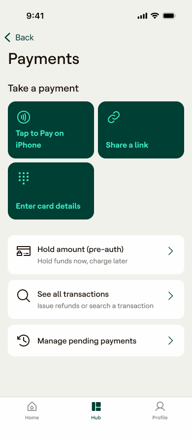

The merchant view, in Dojo Hub

Hub home — manage your payments from the Sidekick app

Manage payments — tap to pay, share a link or enter card details
Built Dojo's remote payments product from scratch — scaling payment links, virtual terminals and SDKs to 100,000+ merchant locations across four international markets, and £2.4B in annual transaction volume.

Getting paid shouldn't require the customer at the counter.
Merchants needed to get paid when the customer wasn't standing in front of them: over the phone, by link, online, across borders. Dojo had the card-present business; the remote side was greenfield.
The brief: build the rails 0→1, make them trustworthy enough for real money, and scale them across four markets.
With no existing remote product, the real risk wasn't technical, it was sequencing. Payment links shipped first: merchants were already taking payments over the phone and keying them into the card machine, driving up fraud and leaving customers frustrated. SDKs came later, better suited to partner-led integrations than the immediate problem in front of merchants.
See payment links ↗Every merchant routing real money through a brand-new rail needed certainty it wouldn't fail. Customer feedback shaped what trust actually required: notifications when a link went unpaid, branded email receipts and the small reassurances that made an unfamiliar way of paying feel safe, because a single failure at this stage would have killed merchant confidence in the whole line of business.
Manage payments ↗Scaling across four markets meant resisting scope creep. New payment methods were declined unless they earned their place, checkouts stayed at MVP rather than full localisation and the most secure option won out over the one customers asked for.
The remote suite scaled to 100,000+ merchant locations across four international markets, reaching £2.4B in annual transaction volume, a new line of business built from nothing, serving some of the biggest UK hospitality businesses for their online payment needs.
The work won Team of the Year and a Creator Award, and laid the infrastructure the hospitality vertical was later built on.